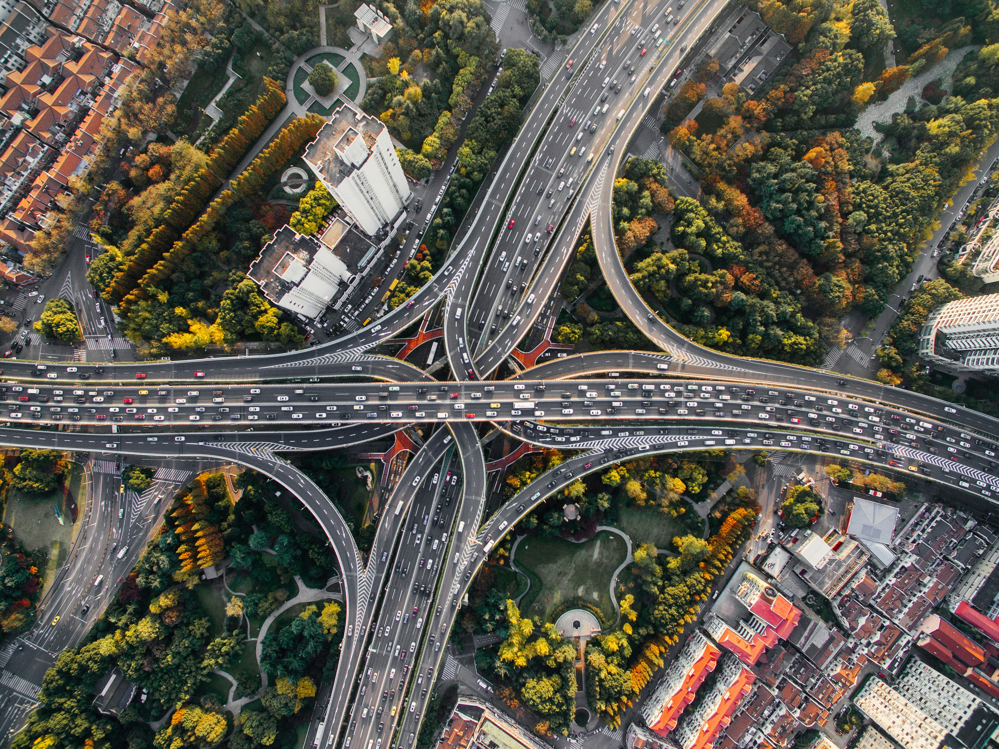
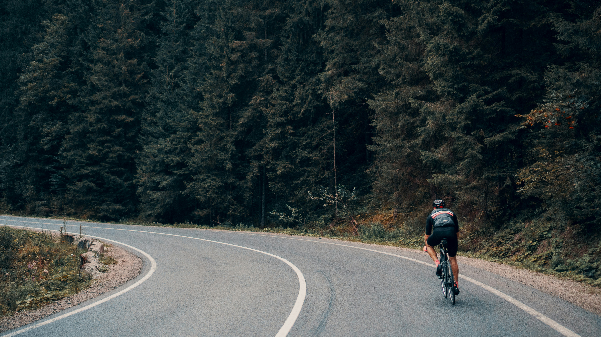

Kép: Wikipedia
Kép: AKKN
Fotó: Ross Parmly / Unsplash
Fotó: nader saremi / Unsplash
Fotó: Patrick Hendry / Unsplash
Fotó: Patrick Schneider / Unsplash
Fotó: Simon Maage / Unsplash

Fotó: Denys Nevozhai / Unsplash
Fotó: Denis Chick / Unsplash
Fotó: Emma Simpson / Unsplash

Fotó: Viktor Bystrov / Unsplash
Ikon: yut1655 / Flaticon